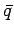
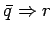

Um die Behauptung q zu beweisen, geht man von der Negation  aus und schließt von auf eine falsche Aussage r, d.h.  (s. auch Tautologien). Dann muß aber auch falsch sein, da man bei der Implikation nur von einer falschen Voraussetzung zu einer falschen Behauptung kommt (s. 1. Zeile der Wahrheitstafel für die Implikation). Wenn aber falsch ist, muß q wahr sein.
| Beispiel |
|
Es ist zu beweisen, daß die Zahl |